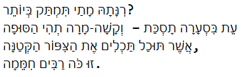

בעיקרון סיימתי את התרגיל, הדפסתי את הטקסט החדש והמסודר לקובץ טקסט חדש, אבל הבעיה היחידה שלי איתו היא שהקובץ מופיע משמאל לימין, ולא מימין לשמאל.
זה גורם לסימני הפיסוק שאמורים להיות בסוף שורה להופיע בתחילתה. מעלה: image.png…
חיפשתי קצת בגוגל ובדוקומנטציה, אבל לא מצאתי משהו שעוזר לי.
גם לכתוב _io.TextIOWrapper.write? לא עזר, כי הוא משום מה לא מזהה את האובייקט.
יש דרך להפוך כיוון ל-rtl בקוד?
Michal

Yam
חפשי באשכול הזה את המילה RTL:
Michal
הפכתי את כל המחברת של במקום משמאל לימין להיות בתצוגת ימין לשמאל, וזה אכן עוזר כשאני מדפיסה את השיר אחרי שסידרתי אותו (ומבלגן את שאר המבחרת).
אבל כשאני שומרת את הטקסט לקובץ, הוא עדיין מיושר לשמאל כמו טקסט באנגלית.
אין משהו בפקודה write שאפשר להוסיף כדי לקבוע את כיוון היישור של הטקסט?
וגם - באיזה אופן אני יכולה לבדוק מה האפשרויות בתוך הפקודות של הקבצים? לכתוב את סוג המשתנה, הפעולה ואז סימן שאלה לא עובד.
Yam
עם איזו תוכנה את פותחת את הקובץ כדי לבדוק מה כתבת לתוכו?
האם ניסית לעשות ctrl+shift בצד ימין של המקלדת?
בנוגע לשאלה השנייה – בתא חדש: שם המשתנה, נקודה, שם הפעולה, סימן שאלה. לוודא ששם הפעולה קיים וששם המשתנה הוגדר.
ashley.glasier
מצטרפת לשאלה. האם יש אפשרות להכניס בכתיבת הקובץ RTL כברירת מחדל?
mariasabshin
מצטרפת לשאלה, בדיוק אותה בעיה ואני לא מצליחה לפתור את זה,
אשמח לדעת מה עשית בסוף